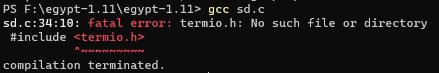
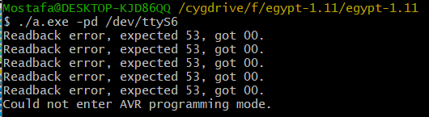
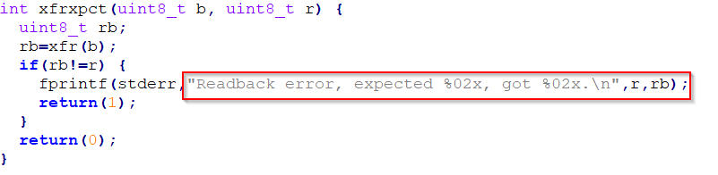
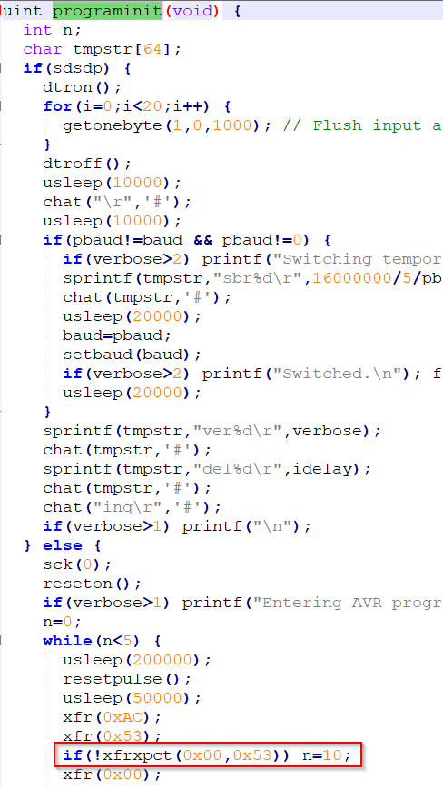
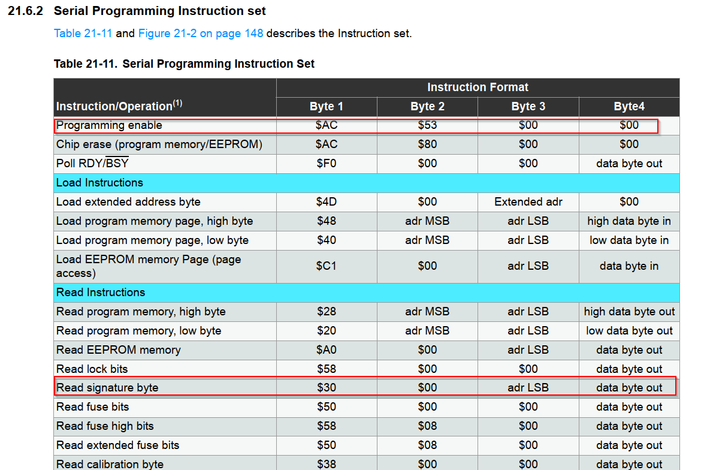
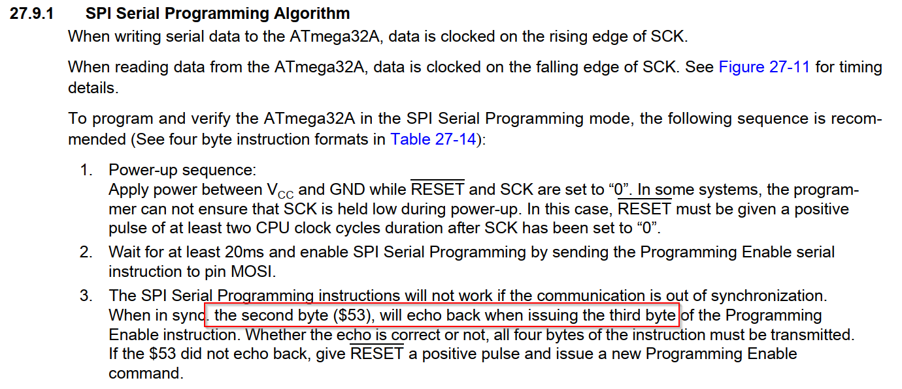
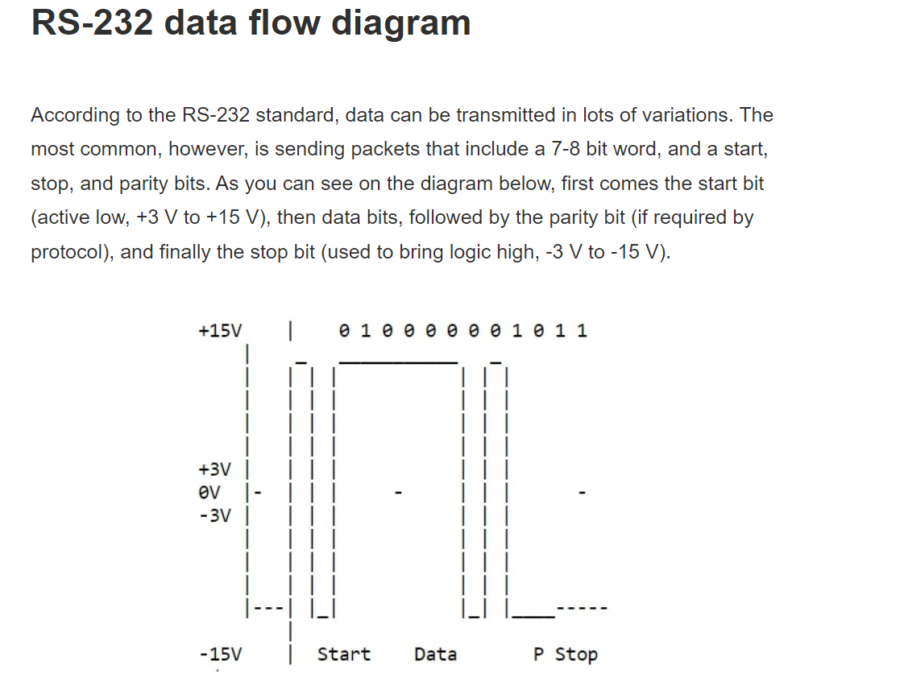
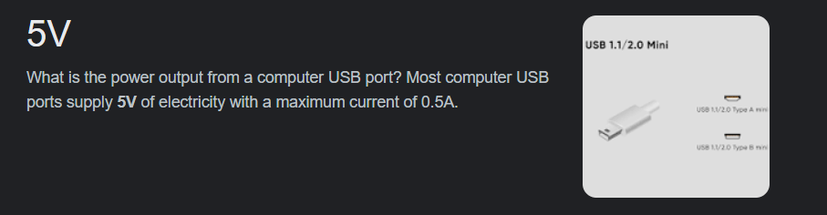
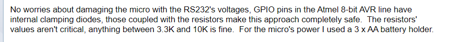
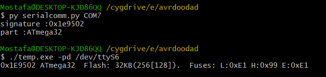

0-compile and run code

gcc sd.c -o out
./out -pd /dev/ttyUSB0





1- install choco windows package manager: https://chocolatey.org/install
Set-ExecutionPolicy Bypass -Scope Process
Set-ExecutionPolicy Bypass -Scope Process -Force; [System.Net.ServicePointManager]::SecurityProtocol = [System.Net.ServicePointManager]::SecurityProtocol -bor 3072; iex ((New-Object System.Net.WebClient).DownloadString('https://community.chocolatey.org/install.ps1'))
2- install packages : https://community.chocolatey.org/packages?q=
choco install graphviz
choco install strawberryperl
choco install mingw
http://www.graphviz.org/download/
https://sourceforge.net/projects/mingw/
3- install egypt : https://www.gson.org/egypt/
C:\Strawberry\perl\bin\perl.exe Makefile.PL
make
make install
perldoc egypt
4-https://www.onlinegdb.com/online_c_compiler
gcc -fdump-rtl-expand sd.c5-
C:\Strawberry\perl\bin\perl.exe .\egypt --callees 'programinit' a-sd.c.245r.expand | dot -Gsize='8.5,11' -Grankdir='LR' -Tpdf -o callgraph.pdf
| Linked file: callgraph.pdf |
pip install pyserial
strace -o file.txt python3 test123.pyvaries and may reach 25V



after changing resistors
